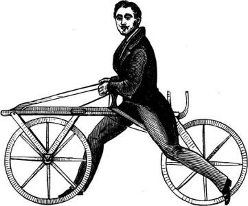
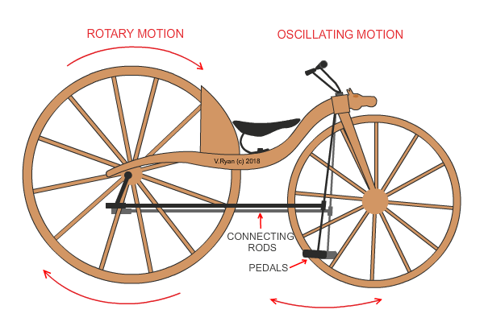
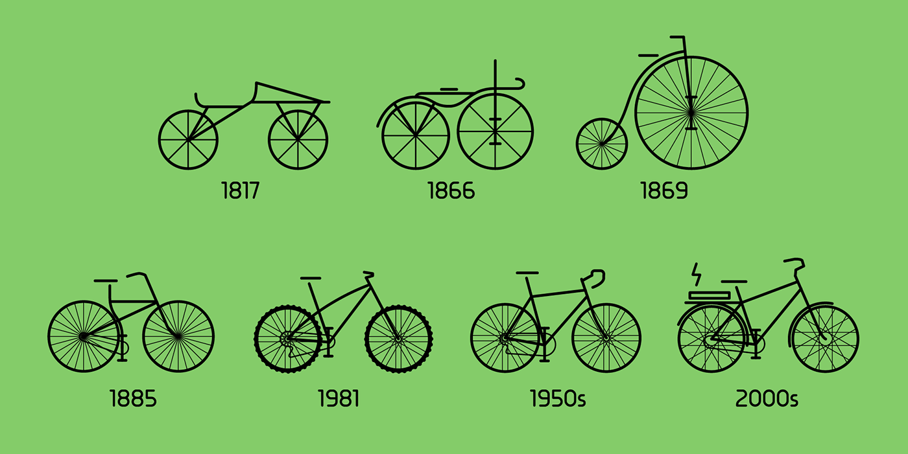
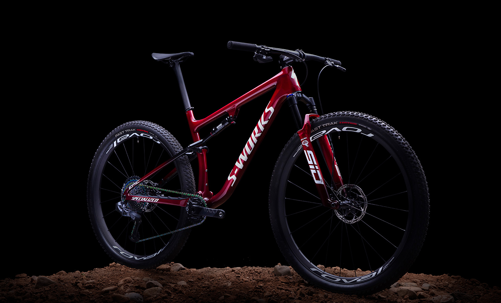
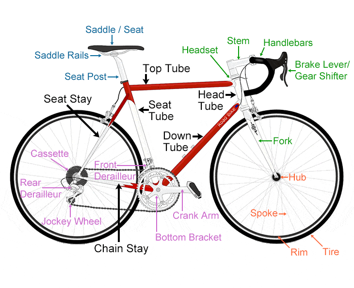
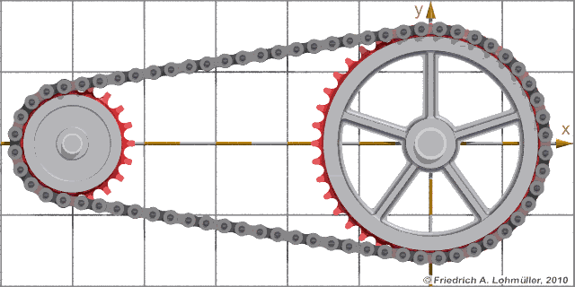

The bicycle
background
The story of bicycles started in Germany when a German baron named Karl von Drais made the first major development when he created a steerable, two-wheeled contraption in 1817. Known by many names, including the “velocipede,” “hobby-horse,” “draisine” and “running machine,” this early invention has made Drais widely acknowledged as the father of the bicycle. But the bicycle as we know it today evolved in the 19th century thanks to the work of several different inventors.
Well, the first design was dangerous to ride. So the design was modified to a safer and a better design that featured equal-sized wheels and a chain drive. In in 1885, when Englishman John Kemp Starley perfected a "safety bicycle" design.
The evolution of bicycles changed by the decades so it would appear safer, more comfortable and easier to ride.
Untill they become the way we know them today.
mechanism
The main components of a bicycle's mechanism are the two gears and the chain. Then we have the wheels, handlebars and the body parts.
The crank arm uses the force applied by feet to rotate the the bottom bracket (the main gear) which translate rotaional motion by the chain to one of the cassettes. This will make the bicycle moves forward.
The derailleur changes the position of the chain on the cassettes, so it can change the gear rotating with. And it workes depends on the wire's tension.